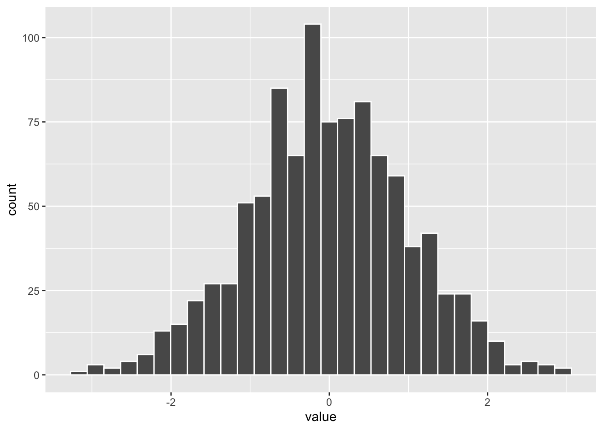

Este Documento es una introducción a RMarkdown y sus funciones para crear documentos.
## Luis, dos hashtag
### José
#### María
##### Denny
###### Hello, seis hashtags el tamaño de letra más pequeño
####### Saludos, Añadir más hashtags no produce un tamaño más pequeño
Saludos
Estoy enamorado de RMarkdown “si no pone hashtag asi sera el tamaño de las letras”
Para una lista no ordenada (sin numeración), usa “+” y “-”, los “+” serán puntos negros, y los “-” serán puntos abiertos.
Para una lista ordenada se usan números y numeración latin i). Nota la indentación necesaria para construir una lista ordenada.
sub-ítem 1 (aquí es muy importante la cantidad de “tabs”; se necesitan 4 “tabs”)
sub-ítem 2 (nota que el documento .html se ve diferente al documento .rmd)
,,,,
más texto
(@) Un énfasis
Un texto sin numeración………….
(@) Otro tema con énfasis
Para letra en itálica se usa *, antes y después del texto, *texto en italico*
El texto a continuación tiene palabras en letra itálica para resaltar un tema o una palabra en otro idioma.
Para letra en ennegrecido se usa dos **, antes y después del texto, **texto en ennegrecido**
Otro método para resaltar un texto es ennegracerlo. El título del libro que estoy leyendo es Seven Japanese Tales de Junichiro Tanizaki.
Para añadir una linea corta o larga se usa dos -- o tres ---.
Para añadir líneas antes de un texto se usa – el texto, o tres para uno más largo — otro texto
Para añadir una ecuación matemática en el texto como parte de una oración se usa un signo de dólar antes y después de la ecuación deseada $x^2$, \(x^2\); esta ecuación se incluye parte de la oración.
Para que la ecuación matemática aparezca centralizada en el documento se usan dos signo de dólar, tanto antes como después. Por ejemplo, la fórmula para varianza es la siguiente, $$\sigma^2=\frac{\sum_{i=1}^{n}(x_i-\mu_x)}{n-1}$$, \[\sigma^2=\frac{\sum_{i=1}^{n}(x_i-\mu_x)}{n-1}\] Nota que se usa latex para hacer la fórmula.
Hay muchas maneras de añadir una tabla en RMarkdown, una de esta es usar la función tribble en el paquete tibble.
library(tidyverse) #Activar el grupo de paquetes "tidyverse"## ── Attaching packages ─────────────────────────────────────── tidyverse 1.3.1 ──## ✓ ggplot2 3.3.5 ✓ purrr 0.3.4
## ✓ tibble 3.1.3 ✓ dplyr 1.0.7
## ✓ tidyr 1.1.3 ✓ stringr 1.4.0
## ✓ readr 2.0.0 ✓ forcats 0.5.1## ── Conflicts ────────────────────────────────────────── tidyverse_conflicts() ──
## x dplyr::filter() masks stats::filter()
## x dplyr::lag() masks stats::lag()Nota que los nombres de las variables tienen que ser continuas (o sea, no puede haber espacios), para nom bres compuestos se une con _. El nombre de variables se define con el siguiente signo ~. Entre cada columna/variable/ datos, se usa una coma.
mi_tabla=tribble(
~Edad, ~Genero, ~Pueblo_nacido,~Nueva_variable,
23, "F", "Caguas", 1,
190, "M", "San Juan", 2
)
mi_tabla## # A tibble: 2 × 4
## Edad Genero Pueblo_nacido Nueva_variable
## <dbl> <chr> <chr> <dbl>
## 1 23 F Caguas 1
## 2 190 M San Juan 2Una de la gran ventaja de trabajar con RMarkdown es que es sumamente fácil integrar los análisis estadístico y gráficos al documento. Aqui se demuestra como usando añadir un gráfico. El primer paso es añadir un chunk de R, despues los datos que añadimos en un objeto llamado x. Usando estos datos se produce un gráfico.
x=as_tibble(rnorm(1000, 0,1)) # Creamos un conjunto de datos
head(x)## # A tibble: 6 × 1
## value
## <dbl>
## 1 0.339
## 2 -0.501
## 3 -0.957
## 4 -1.26
## 5 -0.595
## 6 -1.58ggplot(x, aes(value))+
geom_histogram(colour="white")## `stat_bin()` using `bins = 30`. Pick better value with `binwidth`.
Se puede resaltar un texto más largo usando el siguiente signo al frente del texto >. Vemos que el texto es un bloque en un tamaño de letra distincta.
Una manera de resaltar texto es poner este en un bloque para demostrar un idea, una definición, o concepto. Por ejemplo: Analítica Fundación, Inc., es una corporación sin fines de lucro incorporada bajo las leyes del Estado Libre Asociado de Puerto Rico en 2018. Su especialidad es el análisis de datos. Su objetivo principal es proveer una gran variedad de servicios educativos, de investigación y de capacitación profesional, fomentando el desarrollo de pensamiento crítico en el campo del análisis cuantitativo.
En otras palabras, mostrar exactamente como aparece en el texto. Por ejemplo, quiero que este texto luzca exactamente como aqui _ - sin que se modifique el formato del texto.
Al contrario, si se escribe sin comillas aqui _ - se ve diferente al texto anterior.
Esto es perfecto para poesía
`une volée d'outardes
se pointe
a l'horizon'
la première lettre
de mon prénom
traverse le ciel`
Poema de Véronique Sylvain, Premier quart, Prise de Parole, 2019.
NOTA: hay dos alternativas, una con la dirección del enlace de forma visible y otra con solo el enlace sin que aparezca la dirección. En el primer ejemplo se añade < antes del url y > después como lo siguiente <https://raymondltremblay.github.io>. La ventaja es que presionar sobre el enlace lo lleva a la dirección del enlace.
El segundo ejemplo se añade de la siguiente manera [texto visto](el ulr que no se ve), nota aqui que se usa los corchetes y parentesis. El ejemplo en el texto tiene la siguiente información. [Analitica](https://raymondltremblay.github.io/ANALITICA/index.html).
[^1]Al final de esta oración añado el número de una nota al calce o de una referencia; por ejemplo, de mi manuscrito más citado1
Una segunda referencia2
La ventaja de este sistema es que presionando en el .html el número de la nota lo lleva a la sección de referencias.
Referencias